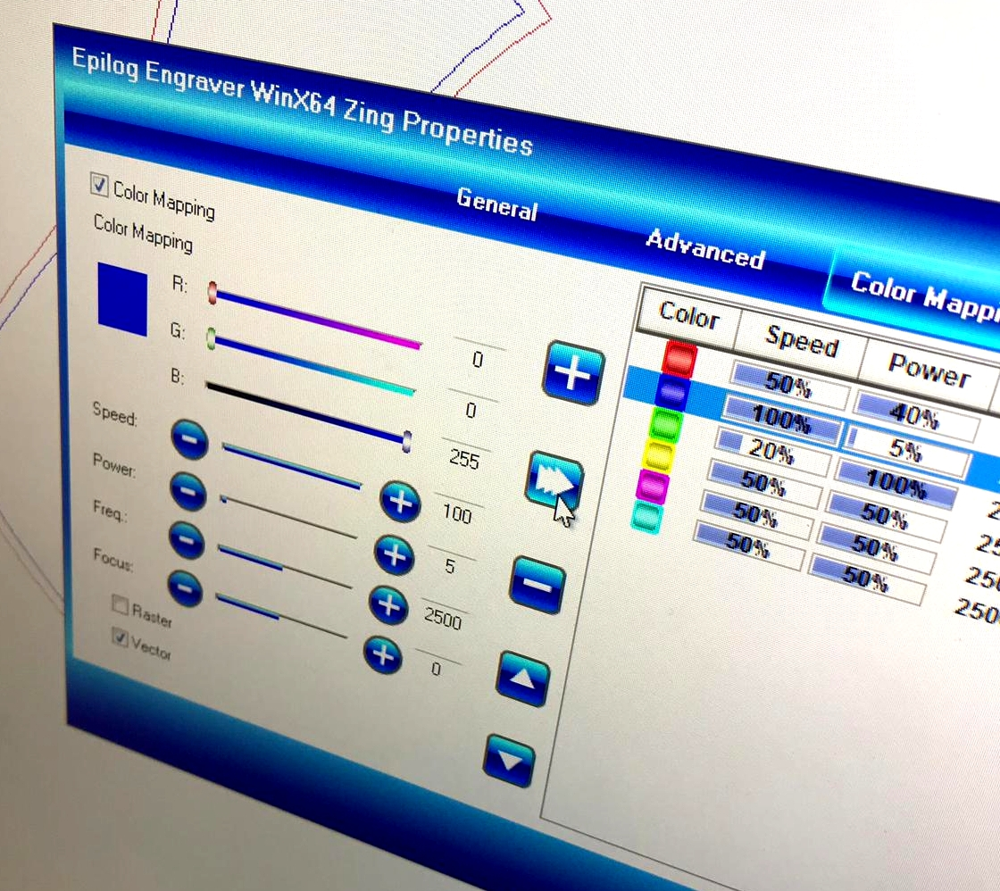
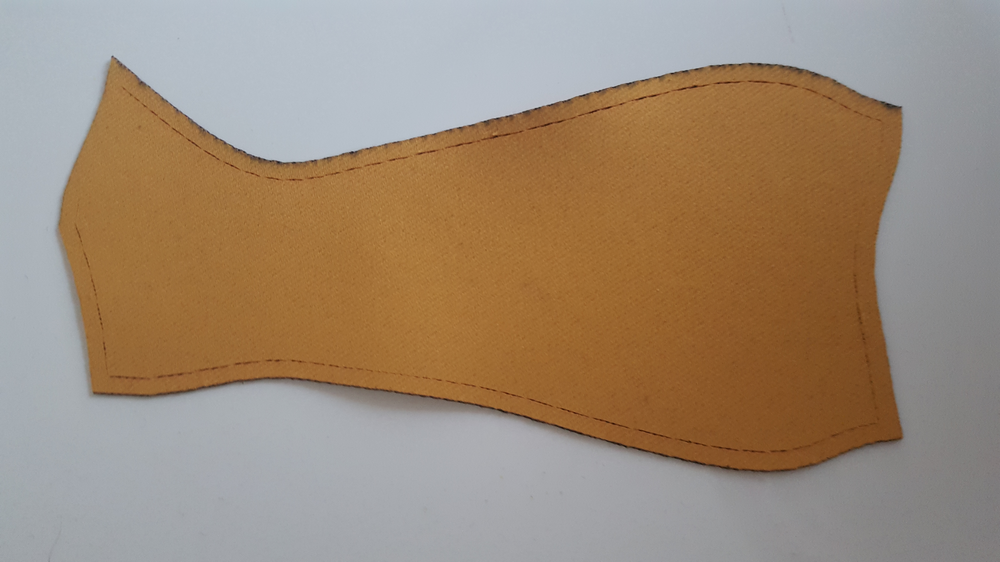
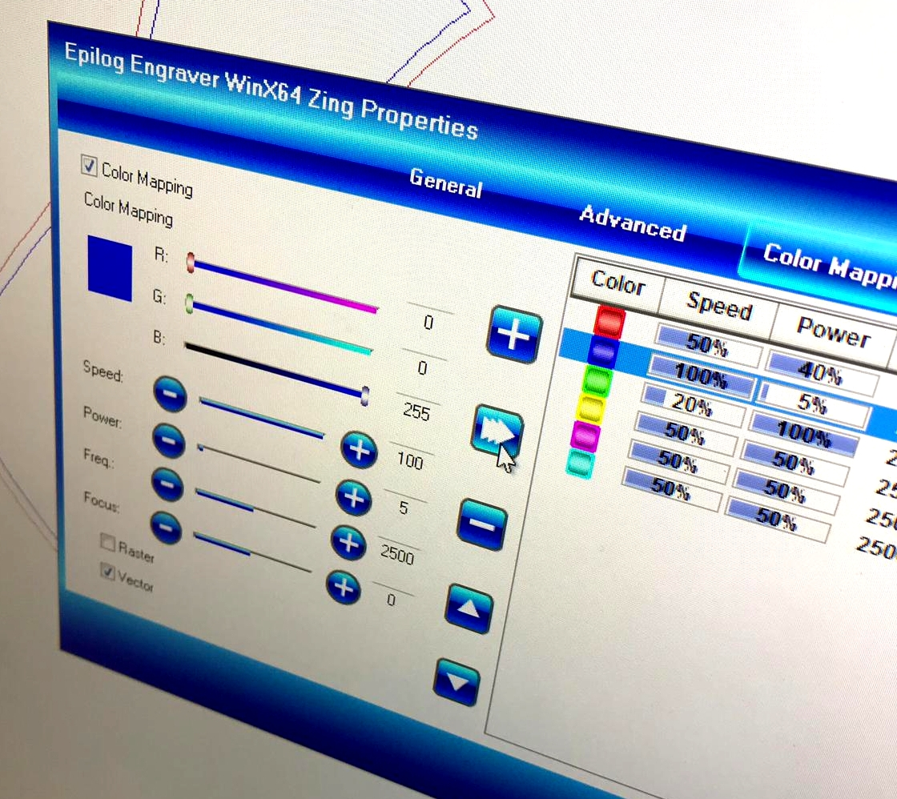
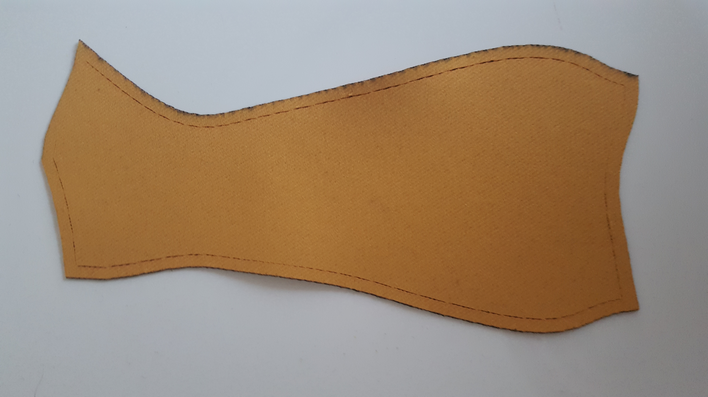

Fabrication for Care
Interdisciplinary Project Winter Semester 2018/2019
Rhine-Waal University of Applied Sciences FabLab Kamp-Lintfort
by Adriana Cabrera, Prof. Karsten Nebe, Prof. William Megill
Faculty Enviroment and Energy
LASER CUTTING
Laser cutting is a technology that uses a laser to cut materials. Generation of the laser beam involves stimulating a lasing material by electrical discharges or lamps within a closed container.
 Our goal was to generate our designed mold of the previous week.
Firstly, the design it was made in exact flat has to be export to an external USB, to take it to the computer connected with the laser cutting machine. After this it is necessary to choose the textil you want to work eith. In my cases, i choosed Nylon.
Later some tests have to be made, changing the frequency and speed to make sure which are the best options for your textile. These changes can be done as is shown in the following picture.

The next step is to positionate the design in the corner (on the computer), with the aim of saving the maximum possible fabric. Once this has been done, the laser must be calibrated manually.
Noteworthy is the fact that before cutting, even before doing the different tests, it is always really important to turn on the vacuum machine.
The final result is shown below.

Our goal was to generate our designed mold of the previous week.
Firstly, the design it was made in exact flat has to be export to an external USB, to take it to the computer connected with the laser cutting machine. After this it is necessary to choose the textil you want to work eith. In my cases, i choosed Nylon.
Later some tests have to be made, changing the frequency and speed to make sure which are the best options for your textile. These changes can be done as is shown in the following picture.

The next step is to positionate the design in the corner (on the computer), with the aim of saving the maximum possible fabric. Once this has been done, the laser must be calibrated manually.
Noteworthy is the fact that before cutting, even before doing the different tests, it is always really important to turn on the vacuum machine.
The final result is shown below.
